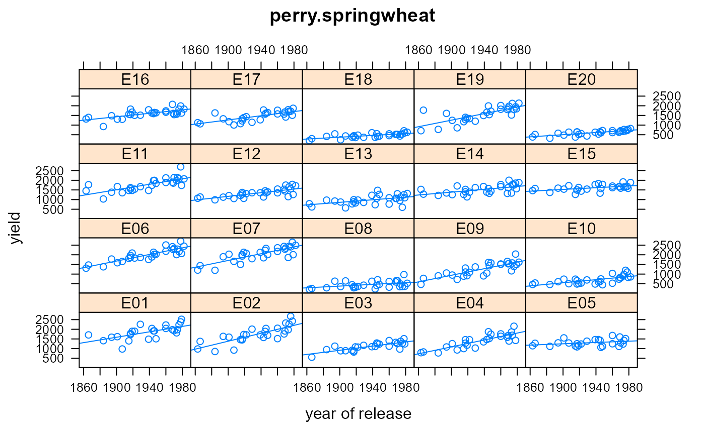

perry.springwheat.RdYields of wheat cultivars introduced 1860-1982. Grown in 20 environments.
data("perry.springwheat")
A data frame with 560 observations on the following 6 variables.
yieldyield, kg/ha
gengenotype/cultivar factor, 28 levels
envenvironment factor, 20 levels
sitesite factor
yearyear, 1979-1982
yoryear of release, 1860-1982
Twenty-eight of the most significant wheat cultivars of the past century in Western Australia, were grown in 20 field trials over 4 years in the Central and Eastern wheat-belt of Australia.
At the Wongan Hills site there were separate early and late sown trials in 1979 and 1980. Later sowing dates generally have lower yields.
Note: Although not indicated by the original paper, it may be that the Merredin site in 1979 also had early/late sowing dates.
Used with permission of Mario D'Antuono and CSIRO Publishing.
MW Perry and MF D'Antuono. (1989). Yield improvement and associated characteristics of some Australian spring wheat cultivars introduced between 1860 and 1982. Australian Journal of Agricultural Research, 40(3), 457--472. https://www.publish.csiro.au/nid/43/issue/1237.htm
# \dontrun{ library(agridat) data(perry.springwheat) dat <- perry.springwheat libs(lattice) xyplot(yield~yor|env, dat, type=c('p','r'), xlab="year of release", main="perry.springwheat")# Show a table of sites*year # libs(latticeExtra) # useOuterStrips(xyplot(yield~yor|site*factor(year), dat, # type=c('p','r'))) # Perry reports a rate of gain of 5.8 kg/ha/year. No model is given. # We fit a model with separate intercept/slope for each env m1 <- lm(yield ~ env + yor + env:yor, data=dat) # Average slope across environments mean(c(coef(m1)[21], coef(m1)[21]+coef(m1)[22:40]))#> [1] 5.496781## [1] 5.496781 # ---------- # Now a mixed-effects model. Fixed overall int/slope. Random env int/slope. # First, re-scale response so we don't have huge variances dat$y <- dat$yield / 100 libs(lme4) # Use || for uncorrelated int/slope. Bad model. See below. # m2 <- lmer(y ~ 1 + yor + (1+yor||env), data=dat) ## Warning messages: ## 1: In checkConv(attr(opt, "derivs"), opt$par, ctrl = control$checkConv, : ## Model failed to converge with max|grad| = 0.55842 (tol = 0.002, component 1) ## 2: In checkConv(attr(opt, "derivs"), opt$par, ctrl = control$checkConv, : ## Model is nearly unidentifiable: very large eigenvalue ## - Rescale variables?;Model is nearly unidentifiable: large eigenvalue ratio ## - Rescale variables? # Looks like lme4 is having trouble with variance of intercepts # There is nothing special about 1800 years, so change the # intercept -- 'correct' yor by subtracting 1800 and try again. dat$yorc <- dat$yor - 1800 m3 <- lmer(y ~ 1 + yorc + (1+yorc||env), data=dat)#> Warning: Model failed to converge with max|grad| = 1.01901 (tol = 0.002, component 1)# Now lme4 succeeds. Rate of gain is 100*0.0549 = 5.49 fixef(m3)#> (Intercept) yorc #> 5.8757200 0.0549384## (Intercept) yorc ## 5.87492444 0.05494464 # asreml3 & asreml4 libs(asreml,lucid) m3a <- asreml(y ~ 1 + yorc, data=dat, random = ~ env + env:yorc)#> Model fitted using the gamma parameterization. #> ASReml 4.1.0 Fri Dec 11 17:49:48 2020 #> LogLik Sigma2 DF wall cpu #> 1 -762.231 3.97642 544 17:49:48 0.0 (1 restrained) #> 2 -727.921 3.82476 544 17:49:48 0.0 (1 restrained) #> 3 -697.967 3.71607 544 17:49:48 0.0 #> 4 -694.459 3.81272 544 17:49:48 0.0 #> 5 -689.505 3.63995 544 17:49:48 0.0 #> 6 -688.610 3.56952 544 17:49:48 0.0 #> 7 -688.560 3.55226 544 17:49:48 0.0 #> 8 -688.560 3.55102 544 17:49:48 0.0vc(m3)#> grp var1 var2 vcov sdcor #> env (Intercept) <NA> 15.09 3.885 #> env.1 yorc <NA> 0.000627 0.02504 #> Residual <NA> <NA> 3.525 1.877## grp var1 var2 vcov sdcor ## env (Intercept) <NA> 11.61 3.407 ## env.1 yorc <NA> 0.00063 0.02511 ## Residual <NA> <NA> 3.551 1.884 vc(m3a)#> effect component std.error z.ratio bound %ch #> env 11.61 4.385 2.6 P 0 #> env:yorc 0.00063 0.000236 2.7 P 0 #> units!R 3.551 0.2231 16 P 0## effect component std.error z.ratio con ## env!env.var 11.61 4.385 2.6 Positive ## env:yorc!env.var 0.00063 0.000236 2.7 Positive ## R!variance 3.551 0.2231 16 Positive # }